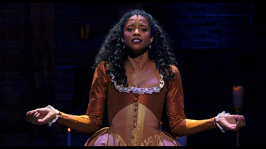

Ela é Angelica Schuyler_
Angelica Schuyler é uma versão musical dramatizada da figura real de mesmo nome. Angelica Schuyler foi retratada pela primeira vez pela estrela da Broadway Renée Elise Goldsberry no musical de sucesso de 2015 Hamilton.
Suas habilidades
Lin Manuel-Miranda , o compositor do show que também interpretou o papel principal de Alexander Hamilton , não achava que haveria uma atriz que pudesse retratar Angelica do jeito que ele a imaginou. No entanto, Goldsberry entrou e surpreendeu Manuel-Miranda ao cantar a música principal de Angelica no show, "Satisfied"
Uma mulher confiante e atrevida que defende o que acredita.